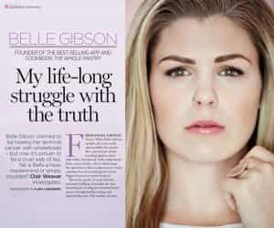
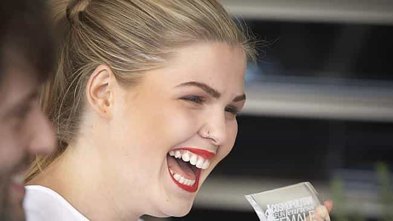

< < < Back
Wellness SJW Belle Gibson Confirms Faking Cancer To Steal Money – Return Of Kings
Again, ROK has been proven right. A feminist “icon”, once hailed as a “Fun Fearless Female”, has been outed.
Belle Gibson, the “entrepreneur” and “cancer survivor” I introduced you to last month, has admitted she faked multiple cancers and having had heart surgery. Several years ago, she rose to international prominence for claiming she had treated her one-of-a-kind terminal brain cancer by simply eating whole foods and avoiding the normal “processed” diet, indulging in all sorts of super foods and “self-healing” strategies.
She then cultivated a self-help, “cancer-beating” recipe empire, vowing to donate a large chunk of her profits to charity. By this time, thousands of panicking cancer sufferers, other seriously diseased people, or those just wanting to help a good cause had purchased her product. Apple was so enthralled that they intended to feature The Whole Pantry as a default Apple Watch app.
It was too good to be true
However, serious problems later emerged in Gibson’s story, such as inflating her age, alleging her cancer had spread to multiple organs, and citing a form of brain cancer medical professionals said they never knew anyone had survived. She was also caught consuming beer, pizza, and all manner of clearly non-healing foods on social media.
Vowing repeatedly to give more information about the “lies” being spread about her, she finally acknowledged this week that she made everything up. Because of her selfishness and sociopathy, she has risked the health of thousands of people who followed her non-medically based approaches to fighting cancer and other diseases.
Now The Australian Women’s Weekly, that lovely paper rag which claims to be feminist but makes a living out of objectifying other women and paying for interviews with the mistresses of convicted killers, has courted Belle Gibson. She has been given an outlet to cry that it’s her childhood that scarred her.
After all, she had to look after her autistic brother as a girl. She even had no toys as a child! Therefore that justifies a calamitous scam involving around a million dollars, including both the donations and the money she made “legitimately” by saying the rest would go to charity.
I’m certainly convinced by Belle’s mea culpa, how about you?
Why aren’t police charging Belle Gibson with pervasive fraud?
Aside from scamming, Belle Gibson’s biggest skill set is applying make-up and airbrushing to take herself from a 3 to a 5.5.
Rather than just the $300,000 (and whatever else was promised that we don’t know of), Belle Gibson’s entire sales were built on fraud. When you solicit sales promising a certain high percentage will go to charity, even the proportion you did not offer to organisations has been garnered through outright deception. She has likely made $1.2 million from the scam, based on her prior claim that 25 percent of sales had already been given to charity.
But police won’t be going after our darling Belle. Tragically, whilst poor senior citizens are apprehended for shoplifting in Victoria when they’re poverty-stricken or have dementia, Gibson can escape scot-free from criminal charges for a calculated cancer fraud over many years. A couple of loaves of bread versus $300,000 in charity donations and $1 million in falsely accrued app sales.
The best we can hope for is civil charges via the Victorian consumer watchdog. And given her knack for fraud, Belle is well capable of concealing any money she still hasn’t splurged to avoid paying what should be (but probably won’t be) a substantial fine.
Truth be told, we cannot blame the police. They are responding to their own experiences with the judicial system, where judges routinely grant bail to or avoid convicting all manner of people who belong permanently in jail, whilst convicting men for rape and domestic violence based on hearsay.
Denying female agency

I’d be laughing too if I made off with a fraud of about $1.2 million.
The AWW has presented an entirely sympathetic portrait of poor, vilified Belle. She’s a victim of either her family or its circumstances and her mother just expected too much of her.
Just like likely pathological liar Jackie Coakley, who is still referred to as a victim, Belle Gibson is, with the help of the media, refocusing attention on her “victimhood.” No matter how many lives you affect with false, purely attention-seeking criminal accusations or charity and medical scams, as a previously recognized female SJW, you are still supposedly deserving of support for and mitigation of your “mistakes.”
Congratulations, AWW, you have obfuscated the crimes of a fabulist:
During the interviews, whenever challenged, Belle cried easily and muddled her words.
This is called self-pity, AWW, and it’s a superb, effective tactic employed by not only victimized and truly persecuted women, but also manipulative, delusional, and, in this case, outright fraudulent and sociopathic ones. By mentioning this, all the publication is trying to do is to provoke sympathy in readers. Poor Belle, the hard-working mother-of-one now exposed to the media spotlight she first cultivated herself to make ill-gotten riches!
After that comes the attempt by the journalist, Clair Weaver, to ask whether Belle is even guilty of any wrongdoing:
All of which begs the question: is this young woman really capable of masterminding one of the biggest hoaxes in recent history?
She told millions of people she had the rarest of terminal cancers, built a business around it and pathologically lied for years to make a fortune, but the AWW still doesn’t believe or wants to doubt that Belle Gibson is a scammer.
With no similarly remunerating skills bar scamming, Belle Gibson enjoyed a life of outright luxury, including a BMW, $2,000 designer handbags, first-class international travel and living in an expensive beachfront property.
Belle Gibson was happy for cancer victims to die

The sociopathy of Jackie Coakley (pictured) and Belle Gibson presents a cogent argument for simultaneous and multiple reincarnations.
Aside from defrauding thousands of people, Gibson, like a true sociopath, steered sufferers of terminal and other diseases away from proven or more effective treatments. It is impossible to quantify the number of people whose lives she has endangered or outright ended with her pseudo-science. This was all done for her own (substantial) profit and popularity, which she clearly craved more than not threatening the safety of desperately sick and miserable people.
The fact that the AWW has interviewed Belle Gibson, and not a cancer sufferer who abstained from treatment because of her charlatan advice, demonstrates that SJW privilege is alive and well. Forget the real victims. If you claim you want to change the world and be an empowered woman, you can’t be that bad. Notice that even after being exposed as a fraud, she continues to court the attention she so desperately seeks.
Expose them and then kick them to the ground
Perfectly brutal but legal methods are needed to prevent woefully narcissistic scams such as Belle Gibson’s. From a utilitarian perspective, the need to protect the truly vulnerable, such as cancer sufferers, outweighs any need to respect the vanity and sociopathy of someone who preys on them for profit.
The same goes for the innocent victims of false rape accusations such as at Duke University and the UVA fraternity, or the utterly blameless business maliciously targeted by Ellen Pao.
Belle Gibson should be a well-deserved pariah until the day she leaves this world. But before that, she needs to be charged and imprisoned for her crimes. You know she would if she were a man.
Read More: Is This “Inspiration To Women” Faking Cancer And Stealing Hundreds Of Thousands Of Dollars?


{kind=link}